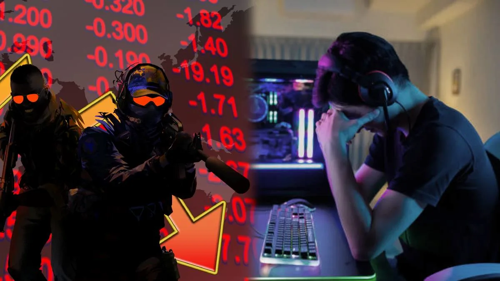

CS2 merkatuaren egoera muturrean
Counter-Strike 2-ko “skin”-en merkatua izugarri daldaka azken aldian: “Trade Up Contract” eguneratze batek sukurtsal ekonomiko handi bat eragin du.
Eguneratze horri esker, 5 “Covert” skin (gorrizkoak) trukatzen dira aleatorioki “knife” edo “guante” beteranoago batengatik.
Hau izugarri oparitu du eskaintza, eta horrek “knife”-en eta “guante”-en prezioak behera eragin ditu — batzuetan %50 baino gehiago murriztuz.
Merkatuak izan duen kolapso horrek kapitalizazio globala murriztu du, eta analistak esaten dute etorkizunean ere merkatuko “lurreratze handiagoak” egon daitezkeela.
Leer másFortnite-n simpsons ile skin berriak

Fortnite-k kolaborazio berri bat iragarri du Hora de Aventuras (Adventure Time) seriearekin: Finn, Jake, Marceline eta Princesa Chicle pertsonaiak jokoaren denda kosmetikoan daude eskuragarri. Diario AS
Skinek aparteko magnetismoa dute: mochila tematikoak, pikatxoak eta “gesto”-ak ere sartzen dira. Diario AS
Prezioei dagokienez, skin bakoitza 1.500 paVos inguruko balioa du, gestoak edo mochila pixka bat merkeago izan daitezke. Diario AS
Kolaborazio honen bidez, Epic Games-ek publiko zabala jarri nahi du jokoan: animearen zaleak + Fortnitearen komunitatea.
Leer másCall of Duty: Verdansk itzultzen da
Call of Duty-ko Warzone jokoan Verdansk mapa klasikoa itzuli da Black Ops 6-ren 3. denboraldiarekin.
Itzulera ofiziala 3 apirilaren 3an izan zen, 2025ean, gertaera nagusi batekin.
Mapa berreraikia da: %95 berezia da jatorrizko Verdansk-etik, baina hobekuntza batzuk ere egin dituzte joko-esperientzia modernoa bateratzeko.
Gainera, eskaintza berri bat dator: “Battle Royale casual” modua (28 jokalari + bot-ak) gehitu da, jende gehiagorentzat joko lasaigarriago bat bilatzeko.
Leer más